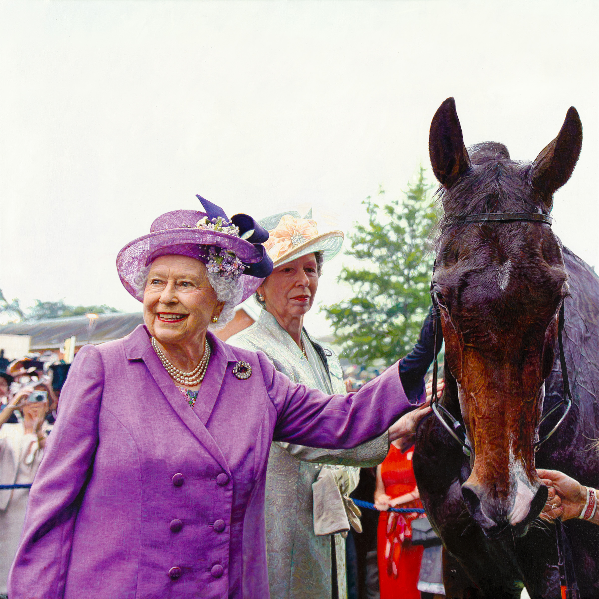

01
College Sports
Collegiate athletics rendered in super-realism — the coaches, the players, and the moments that define a program. Steve is the first African American to complete artwork sanctioned by the University of Alabama.
The Collections
Explore Steve Skipper's work across sports, faith, history, portraiture and equine fine art.
01
Collegiate athletics rendered in super-realism — the coaches, the players, and the moments that define a program. Steve is the first African American to complete artwork sanctioned by the University of Alabama.

02
Professional football at full speed. Steve's work has been recognized by NFL legends Bart Starr, Ozzie Newsome, Ken Stabler and Doug Williams.

03
The subject matter at the center of Steve's calling. “Our motivation is the high Calling and Gifting of our Lord and Savior Jesus Christ and our drive and determination to never be disobedient to His heavenly vision.”

04
Historical work recognized by Civil Rights icon Ambassador Andrew J. Young.

05
Steve is the first African American to complete artwork sanctioned by NASCAR — capturing the drivers, the machines, and “complex diversities of anatomy from human to animal and even to race car.”

06
Majesty — a portrait of Her Majesty Queen Elizabeth II, unveiled at the British Consulate.
“My gratitude for this opportunity to Paint Her Majesty Queen Elizabeth II is unmatched. My appreciation to all involved is unparalleled.”
With thanks to Ambassador Andrew J. Young, Sir Rodney Cook, British Consulate General Rachel Galloway and staff, the British Embassy and Buckingham Palace.

07
International equine competition rendered in oil and graphite. “Horses are universally loved sculptured masterpieces from the creative hands of God.”
Proceeds from the original horse paintings and limited editions fund fine-art scholarships through the Anointed Homes Art Foundation.

08
“Accepting the challenge of expression on the faces, in the eyes and body language.” Commissioned and collected portraiture in the super-realist style.

09
Steve's artwork reproduced on collectible drinkware — an accessible entry point to the collection.
The Print Shop
Original paintings, lithographic and giclée prints on exquisite acid-free papers or canvas — all materials guaranteed to be of the highest quality.
Shop Available PrintsSizes, editions, availability and pricing are managed in the official store.